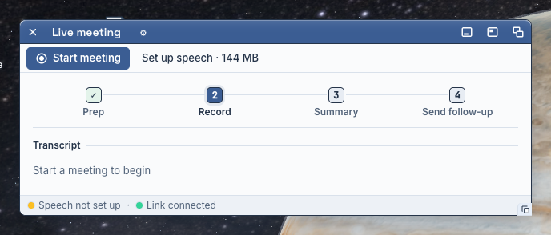
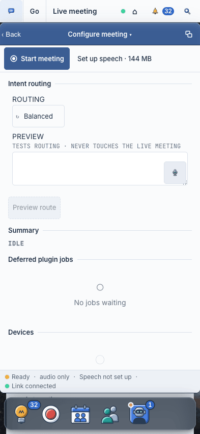
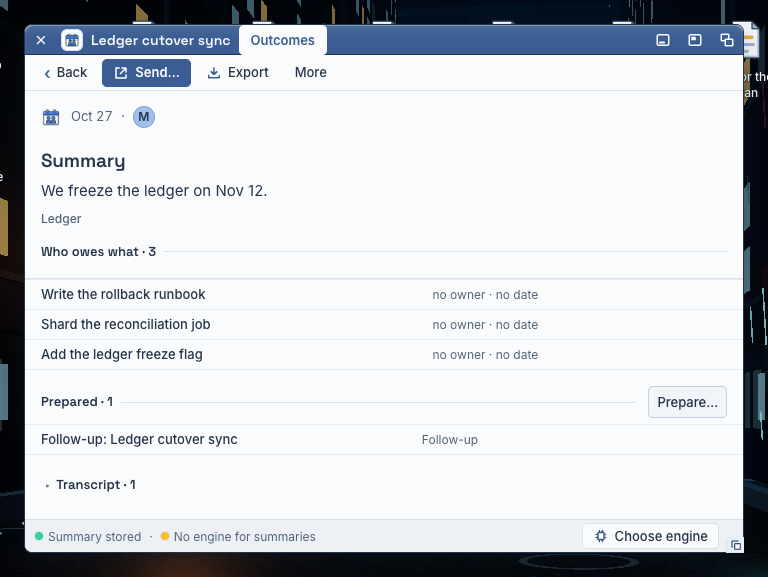

Live meeting: before, during and after
The job (J2, USE_CASES "Record a meeting and find the result again"): he presses Start, he sees the words arrive, he presses Stop, he reads the summary, he decides, he sends the follow-up. Audio readiness and model readiness are separate facts, and a queued job is not a summary.
Recommendation: A, the transcript is the page. One window carries the meeting. Before, it is a short ready sheet with one primary verb. During, the body is the transcript as a document: a time mark in the margin, the speaker's name when the speaker changes, the newest line at the foot. The status bar carries the live state: Recording · 12:04 · Summaries on Codex. After, the same window is the record (MeetingRecord, already built). The gear wing goes: its parts move to Settings ▸ Meetings, and Settings is a toolbar verb.
Drawn at real size (760 × 560 windows over the real 1440 desk, 393 phones), in our tokens and window grammar. The worked example is the seeded "Ledger cutover sync".


What Live does today
Before
- Toolbar: Start meeting (primary), Set up speech · 144 MB when no speech model.
- Body: the four steps, a Transcript head and "Start a meeting to begin".
- Status bar: Speech not set up or Ready, and Link connected.
- No device line, no engine by name: he does not know what will hear him or what will write the summary.
Start
POST /api/meeting/start→ the meeting opens in its own window (pullout:meeting:<id>), the Live window closes (LiveCore.tsxperform).- Doors: Meetings ▸ Record meeting, Today ▸ Record now, Capture ▸ Record, the dock's record orb, ⌥R, MCP
meeting_start_capture.
During
- Bus frames:
segment(text, speaker, start_time, end_time, is_bookmarked),duration("MM:SS" each second),bookmark,intel_status,intel_complete,capture_recovery. - Body: a dated stream with a count head; + Bookmark rides the stream head.
- The time column reads
timestamp/start, the wire sendsstart_time: every line has an empty time mark. The speaker is never shown.
After
POST /api/meeting/stop→ the stop receipt; the same window becomes MeetingRecord: Summary, Who owes what (rows), Prepared, Transcript fold, Send…, status bar Summary stored.- The gear wing (Routing, Try a phrase, Summary state, Background work, Devices) is plumbing, and it hides the face it belongs to.

A. The transcript is the page Recommended
One window, three moments. The body changes; the toolbar and the status bar keep their places. Nothing floats in a blank band.
 Freeze the ledger on Nov 121:02Decide…
Freeze the ledger on Nov 121:02Decide… Write the rollback runbookKKarolConfirmShard the reconciliation jobTTomásConfirmMove the backup job to 22:00PPriyaConfirm
Write the rollback runbookKKarolConfirmShard the reconciliation jobTTomásConfirmMove the backup job to 22:00PPriyaConfirmWhere the gear wing goes
The Live window keeps no gear tab. Configure meeting becomes the toolbar verb Settings, which opens Settings ▸ Meetings. The wing's four parts land there, in a new Live meeting group under Recording: attached devices (each a row with a dot and a word), background work (Process pending, only when work waits), and Try a phrase (the route preview). The routing preset is already there (More ▸ Routing).
B. Transcript and notes side by side Direction
During the meeting the body splits: the transcript on the left, a notes pane on the right where he types. A bookmark becomes a heading in his notes. When the hub publishes a summary mid-meeting it forms at the foot of the notes pane. Before and after are the same as A.
The questions, side by side
A on the phone (393)
What each direction costs
A. LiveCore.tsx only for the window: the transcript document (read start_time and speaker, the wire's own keys), the live state and the summary engine in the status bar (/api/settings/hub meetings.engine), Bookmark as a toolbar verb, the gear door removed. The gear parts move to a new LiveMeetingTools module rendered in Settings ▸ Meetings. Before's "It will hear / It will write" sheet reads /api/settings (mic, system audio), the speech setup state and the same engine fact; the mic level meter needs a level frame the hub does not send (draw "Ready" until it does). No hub change.
B. All of A, plus a meeting notes field (schema and PATCH), a notes pane with its own save, the summary-so-far plate fed by intel_complete, and a pane switch on the phone.
Order of build for A
- During: the transcript as a document with time marks and speakers; the status bar's live state with the engine name; Stop as the danger verb; Bookmark in the toolbar. (Slice 1, this lane.)
- The gear wing's move:
LiveMeetingToolsin Settings ▸ Meetings; Settings as the toolbar verb; the gear tab gone. (Slice 1, this lane.) - Before: the ready sheet (sources and engines as object rows) in place of the empty Transcript head.
- After: the record's rail at Summary, Decided rows with Decide, Send follow-up as the primary (MeetingRecord's lane).
- The phone: Stop and Bookmark as the two toolbar verbs; the Settings verb as a glyph.